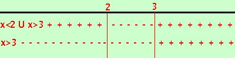

|
risolviamo la disequazione:
Pongo numeratore maggiore e denominatore maggiori di zero x - 3 > 0
quindi il mio sistema e' equivalente al sistema x > 3  Se riporto su un grafico vedo che numeratore e denominatore cambiano di segno (cioe'si annullano) nello stesso valore x = 3; questo significa che se scompongo numeratore e denominatore posso semplificare
x-2 > 0 ed ha quindi soluzione x > 2 Quindi
Osserva che se risolvi senza semplificare fai un errore perche' trovi come soluzione x > 2 con x perche' devi scartare il valore x=3 che annulla il denominatore Il problema sara' ripreso in analisi e vedremo che questo caso fornira' un esempio di funzione con discontinuita' eliminabile di tipo a) |